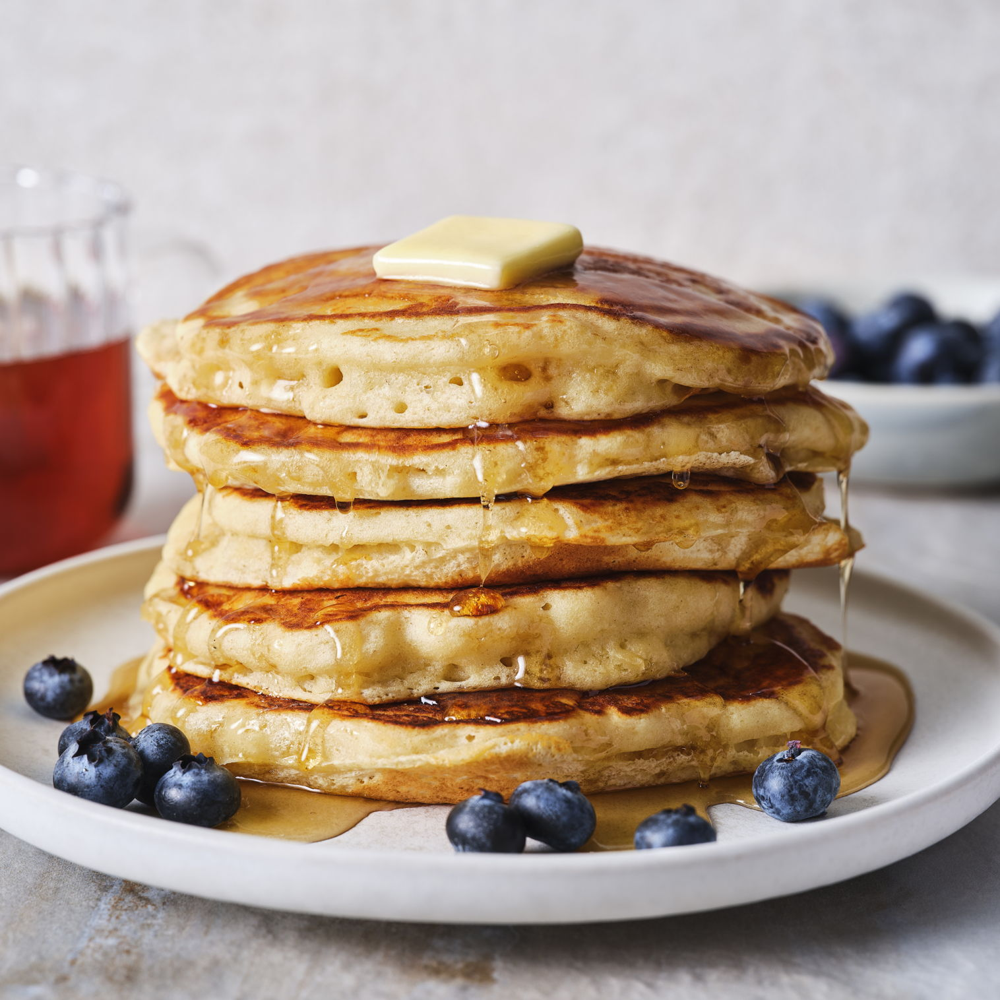
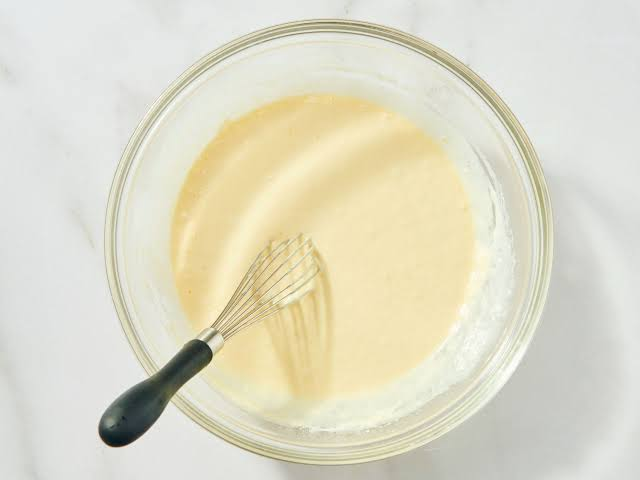

How To Make Pancakes! By: Sameh

On the hunt for the perfect homemade pancake recipe?
Well, we’ve got good news for you—your search stops here.
After multiple rounds of testing, we’ve created our best-ever, go-to pancakes that actually have us excited to brunch at home.
These are everything you could want from classic pancakes: light and fluffy with crispy edges, perfect for soaking up pools of melted butter and maple syrup alongside your plate of oven-baked bacon and our creamiest scrambled eggs. Made from a simple batter of flour, milk, eggs, and baking powder, there’s a reason these are a favorite amongst the Delish team. Ready to become a pancake pro? Read on for all of our top tips to ace this breakfast staple:
How to make the best homemade pancakes:
—Spoon (rather than scoop) your flour into a measuring cup. Scooping can lead to overpacking your measuring cup with too much flour, which can result in tough pancakes. A light touch and a spoon will help keep your stack nice and fluffy.
—Gently stir together your wet and dry ingredients. If you overmix, you'll end up with a dense, short stack. Stir just until you have a few small clumps of flour left, then stop.
—Use the right pan. A large heavy-bottom pan (like a cast-iron) or griddle is your best bet—it will distribute heat the most evenly and give the best color to your pancakes.
—How should I measure my pancakes? We like to use a small measuring cup to pour our batter into the pan. It guarantees all your pancakes will be the same size and makes for easy cleanup.
—Don’t burn your butter. Carefully and gently wipe the hot griddle between pancakes and add new butter so it (and your pancakes) won’t burn.
— When should I flip my pancakes? Checking for bubbles is a classic trick, but don’t rely on solely that before flipping your pancakes. You’ll know these babies are ready to flip when bubbles start to form on top, and when the sides start to lift from the pan. This will take around 2 to 3 minutes per side, but depending on your pan they might need more/less time, so watch for the visual cues to know when they’re ready to go.
Pancake variations & additions.
We wanted to keep this recipe classic, using ingredients you probably already have in your kitchen. If you’ve mastered these and want to take your pancakes to the next level, try our air fryer oat pancakes, buttermilk pancakes, lemon ricotta pancakes, or our carrot cake pancakes next. Alternatively, throw some blueberries, chocolate chips, banana slices, or nuts into the batter of this simple recipe if you want a lil somethin’ extra.
Make pancakes for a crowd.
If you plan on making a lot of pancakes, this recipe easily doubles (or triples)! If your batter starts to thicken too much after sitting for a while, thin it back out with a little bit of milk until it's back to your desired consistency. Keep cooked pancakes warm in a 200° oven on a baking sheet fitted with a wire rack.
Freezing pancakes.
If you have leftover pancakes or just want to make breakfast in advance, these are perfect for freezing. Cook off your pancakes and let them cool, then store them in a freezer-safe resealable bag. Pop them out and defrost them in the toaster for a near-instant breakfast!
Made this? Let us know how it went in the comments below!

Ingredients
1 1/2 c. (180 g.) all-purpose flour
1 Tbsp. granulated sugar
2 tsp. baking powder
1 tsp. kosher salt
1 1/3 c. whole milk
1 large egg
1 tsp. pure vanilla extract
2 Tbsp. melted unsalted butter, plus more, softened, for cooking and serving
Maple syrup, for serving
See All Nutritional Information
You’ll Also Love:
Directions
bookmarksSave
printPrint
Step 1
In a medium bowl, whisk flour, granulated sugar, baking powder, and salt. In a large bowl, whisk milk, egg, and vanilla. While whisking, stream in melted butter and whisk to combine.
Step 2
Gently fold dry ingredients into milk mixture until just combined (do not overmix; some lumps are okay).
Step 3
Preheat a griddle or other large heavy skillet over medium heat until hot but not scorching, 2 to 3 minutes.
Step 4
Melt enough butter to cover surface of griddle, then pour about 1/4 cup batter onto griddle. Cook pancake until bubbles form on top and sides start to lift from pan, 2 to 3 minutes. Flip and cook until bottom is golden brown and pancake is fluffy, 2 to 3 minutes. Transfer to a wire rack. Wipe off griddle, then repeat with more butter and remaining batter (you should get about 10 pancakes).
Step 5
Divide pancakes among plates. Serve with butter and syrup.  copyright
copyright
Visit the real website!s